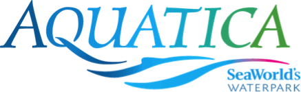

Roteiros dos parques

Aquatica Orlando

O Aquatica é o parque aquático mais novo de Orlando. Inaugurado em 2008 pelo Sea Wolrd, ele faz parte do complexo do grupo na Florida, formado também pelo Busch Gardens, Discovery Cove e Sea World. O grande apelo do parque é o tal toboágua que passa dentro de um aquário com golfinhos, mas no final, ele acaba sendo uma grande decepção também. De qualquer maneira, vou contar aqui um pouco de como é um dia no Aquatica além de tudo o que você tem que saber sobre o parque e suas atrações.
Atmosfera
O tema por trás do Aquatica é o oceano pacífico, mais especificamente as praias da Austrália e Nova Zelândia, representadas pelos mascotes do parque que são vários animais locais. O Aquatica tem um grande número de toboáguas e duas piscinas de ondas que ficam lado a lado em uma praia artificial de areia branca. O esquema é bem parecido com os outros parques aquáticos: cadeiras e espreguiçadeiras espalhadas e muita gente tomando sol e se divertindo.
Na nossa última viagem a Orlando, em Julho de 2014, fomos aos 3 principais parques aquáticos da cidade e o Aquatica foi o mais lotado deles. Todas as atrações tinham filas demoradas e era difícil encontrar uma cadeira vazia para sentarmos.
Alimentação
Existem 3 pontos de comida dentro do Aquatica, sendo dois deles mais “fast food” onde você encontra sanduíches, saladas e alguns snacks, além de um restaurante onde você pode sentar. Esse último, é no estilo buffet, em que você come à vontade por um valor único.
Além das comidas oferecidas dentro do parque, o Aquatica permite a entrada de coolers com refrigerantes, sucos, água e alimentos prontos, como biscoitos, salgadinhos, sanduíches e alimentos para bebês. Alimentos maiores não são permitidos e se levados ao parque, só podem ser consumidos nas áreas reservadas para pic-nic que fica ao lado do estacionamento. Bebidas alcóolicas não são permitidas.
Ingresso
Os ingressos do Aquatica podem estar inclusos nos do Sea World, Busch Gardens ou Discovery Cove como já explicamos aqui.
Se não for em nenhum dos outros parques e quiser somente passar um dia no Aquatica, os ingressos podem ser comprados na bilheteria do parque ou no site oficial. Os valores começam em US$50, mas se comprar pela internet reservando o dia, ele pode sair bem mais barato do que isso.
Aluguel: armários, toalhas e cabanas
O Aquatica também aluga armários e toalhas como já é de praxe nos parques aquáticos da cidade. Você paga US$7 para guardar os seus pertences em um armário pequeno e $11 no armário grande. Nos dois casos você precisa deixar um caução de US$10 que lhe é retornado assim que você devolver as chaves do armário.
Além disso, toalhas estão disponíveis para aluguel por US$2 + US$2 de caução. A dica de sempre é trazer toalhas do seu hotel para economizar um pouco (e claro, leva-las de volta depois).
Assim como nos parques aquáticos da Disney, o Aquatica também oferece locação de espaços privativos, as chamadas cabanas. São 5 tipos que variam entre US$150 até US$500. Os serviços oferecidos são armários e toalhas, uma tenda para ter sombra durante o dia, espaços mais isolados do resto do público e serviço de garçom para comidas e bebidas que podem ser compradas separadamente. Você pode reservar as cabanas quando chegar no parque ou pela internet no site do Aquatica.
Localização, estacionamento e horários
O Aquatica fica ao lado do Sea World, nas margens da International Drive, no trecho que fica mais ao sul. O estacionamento custa $13.
Em geral, o parque funciona entre as 10 da manhã e às 5 da tarde, mas nos meses de verão os horários são estendidos. Veja o calendário completo no site do Aquatica.
Mapa do Aquatica
Diferentemente dos outros parques, o Aquatica não é dividido em regiões e sim em tipos de atrações. Se quiser acompanhar com o mapa do parque aberto, clique aqui.
;){kind=link}
TOBOÁGUAS SEM BÓIAS OU COM TAPETE
– Dolphin Plunge: essa é a atração mais famosa do parque, que estampa outdoors, folhetos e propagandas em todos os lugares possíveis. Ela é também pra mim uma grande decepção e eu explico: a promessa é que você vai escorregar em um toboágua que passa por dentro de um aquário repleto de golfinhos. Porém o “trecho” do escorregador que passa por dentro do aquário é tão curto e o volume de agua que esguicha na sua cara é tão grande, que ninguém nota os golfinhos nadando ali fora. Pra mim é realmente uma grande propaganda enganosa. Se quiserem ter uma noção, vejam no video abaixo como é impossível notar que se está dentro do tanque dos golfinhos.
– Ihu’s Breakaway Falls: essa atração é a mai nova do parque e foi inaugurada no começo do ano. São 4 toboáguas fechados que percorrem caminhos diferentes e são cheio de curvas. Em 3 deles você entra em pé e o chão abre como um alçapão para que você despenque toboágua abaixo. Como ele é um dos toboáguas mais altos da cidade, você atinge uma velocidade bem grande e o frio na barriga é muito bom. Por ser a novidade do ano, prepare-se para longas filas.
– Taumata Racer: essa atração me lembra muito os tobogãs dos parques de diversão de quando eu era criança. Aqueles que você pegava um saco de batata e escorregava ladeira abaixo, sabe? O Taumata Racer é bem assim, com 8 escorregadores lado a lado em que você despenca deitado em um tapete.
TOBOÁGUAS COM BÓIAS PARA UMA PESSOA
– Whanau Way: outra atração bem rápida. Os toboáguas são largos e você escorrega dentro de bóias fazendo algumas curvas bem acentuadas. Sao 4 toboáguas diferentes que vai do mais lento ao mais veloz.
– Omaka Rocka: o Omaka Rocka é bem parecido com o Whanau Way, mas no meio do toboágua, ele tem uns “cones” bem grandes que te mudam de direção, dai você começa a escorregar de ponta cabeça. É divertido.
TOBOÁGUAS COM BÓIAS PARA MAIS DE UMA PESSOA
– Tassie’s Twisters: apesar de ser um pouco mais devagar, me diverti muito no Tassie’s Twisters. Em bóias de 1 ou 2 pessoas, você desce um toboágua e depois fica rodopiando em uma espécie de funil. Pouco frio na barriga mas dei muita risada (e saí um pouco tonto, confesso!).
– Walhalla Wave: uma das duas atrações que comportam a família inteira, você entra em um bote que escorrega por seis andares em um toboágua que é parcialmente fechado. São várias curvas mas ele não chega a ser muito rápido por conta do peso na bóia.
– HooRoo Run: bem parecido com o Walhalla Wave, essa atração é totalmente aberta e no estilo tobogã: uma linha reta com ondas em que você escorrega dentro de um bote bem grande.
RIOS DE CORRENTEZA
– Roa’s Rapids: esse é um rio de correnteza diferente dos outros, pois é mais rápido, com jatos de água no meio. Por ser mais agressivo, não são permitidas bóias dentro do rio, somente coletes salva vidas.
– Loggerhead Lane: esse já é um tradicional “lazy river” com bóias, correnteza devagar e que passa ao lado do aquário dos golfinhos (sim, aquele que o toboágua mal passa por dentro).
PISCINAS COM ONDAS
– Cutback Cove: olhando para as duas piscinas de ondas, essa é a da esquerda e tem ondas mais fortes e altas. No lado fundo da piscina há um relógio gigante que indica quanto tempo falta para começarem as ondas fortes.
– Big Surf Shores: uma versão mais branda, também tem ondas agitadas a cada 15 minutos. Fique de olho no relógio no lado fundo da piscina.
PLAYGROUNDS PARA CRIANÇAS
– Kata’s Kookaburra Cove
– Walkabout Waters